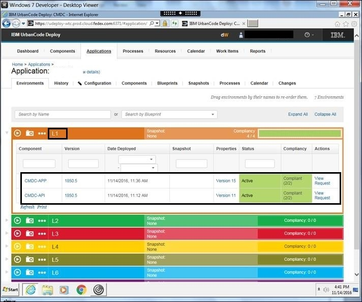

Jenkins
Setup of Deploy job in Jenkins
- Click on New Item to create new job.
- Enter an item name as Deploy.
- Select Freestyle project and click on Ok.
- A deploy job will be displayed on dashboard.
- Click on test job.
- Click on Configure Link.
Pull Artifacts for Deployment
Jenkins will pull the latest artifacts from nexus repository and deploy the packages to the higher environment using UDeploy
Deployment using UDeploy
UDeploy will take packages downloaded from Nexus then it will deploy the Packages to the test/prod environment. This activity will be executed by UDeploy scripts.
Once the packages are deployed in respective test servers then it can be verified on the UDeploy dashboard. Email notification will be triggered by UDeploy once all the packages are deployed successfully.
If Jenkins is integrated with UDeploy, then Deployment status can be verified after publishing packages to UDeploy via Jenkins as shown below.

|